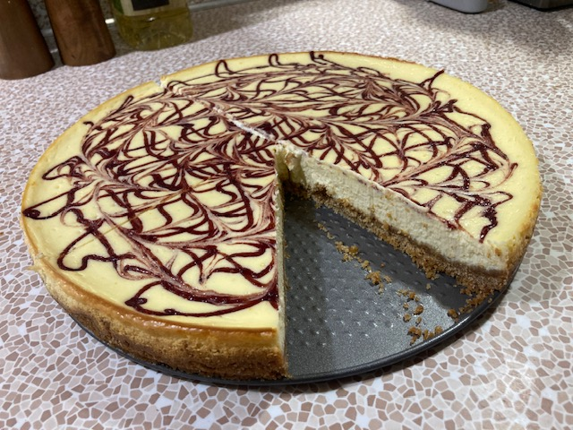

Spiced Cranberry Orange Cheesecake

Spiced Cranberry Orange Cheesecake
I set out to create this recipe for a family Christmas party. The idea for the recipe had been bouncing around in my head for a little while, And after a few iterations, I think I've landed on something special.
The recipe contains a beautifully orange flavored cheesecake, with a little spiced cranberry throughout, and a generous swirl of spiced cranberry sauce on top. Together, the flavors are reminiscent of a nice and warm mulled apple cider on a chilly winter day.
Ingredients
For the Cranberry Sauce
- 1 cup craisins
- 3/4 cup orange juice
- 1 tsp cinnamon
- 1/4 tsp ginger powder
- 1/4 tsp dried nutmeg
- 1/8 tsp ground cloves
- 1/4 cup water
- 2 tbsp sugar, or to taste
For the Graham Cracker Crust
- 1 1/2 cup crushed graham cracker
- 1/3 cup white sugar
- 6 tbsp melted butter
For the Orange Cheesecake
- 24 oz cream cheese
- 1/2 cup sugar
- 6 large eggs
- Zest of 2 Oranges
- 1/4 cup of the cranberry sauce
Steps
For the Cranberry Sauce
- Measure and add all ingredients to a small pot
- Bring to the ingredients to a small boil
- Let simmer for about 15 minutes
- Remove from heat and blend together until smooth
- Let cool completely in the fridge
For the Crust
- Crush the graham crackers if they aren't already
- Combine the graham crackers, sugar, and butter in a bowl until evenly mixed
- Press in to the bottom of a 9in springform pan
For the Orange Cheesecake
- Mixing works best if the cream cheese is brought up to room temperature.
- preheat your oven to 325F
- With a kitchen-aid or hand mixer, combine the cream cheese and sugar
- Doing one or two eggs at a time, add them to the sweetened cream cheese, mixing on the lowest setting until just combined. You may crack the eggs in to a separate bowl before adding to the cream cheese if worried about accidentally adding shells.
- Once all the eggs are added, you want to be careful of overmixing
- Switch to a rubber spatula, and fold in the orange zest
- Fold in some of your cooled cranberry sauce
- Pour mixture in to prepared 9in springform pan over your crust
- Gently tap and wiggle on a flat surface to help remove any bubbles, and using your spatula, flatten the top as best you can if necessary
- Using your preferred method, drizzle cranberry sauce over the top of the cheesecake, and then gently swirl using a chopstick or something similar. Putting the sauce in a ziploc bag, and then cutting a tiny bit off the corner works just fine as a squeeze bottle replacement
- Finally, place the cheesecake in the oven. and let it cook for about 40 to 50 minutes. The edges should look firm, while the center will still be slightly wobbly.
- when it is finished cooking, turn off the oven, leave the oven door cracked open, and let the cheesecake cool slowly
- Move the cheesecake to the fridge, and let cool over night